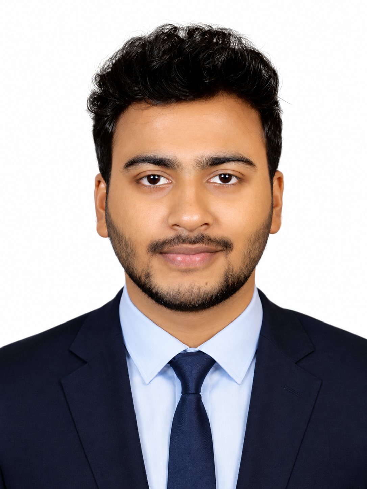

Ahsanul Amin
Electrical & Electronic Engineering graduate from CUET, interested in power systems, power electronics and high-voltage substation design.
- CUET, B.Sc. EEE 2022 to 2026
- DESCO intern
- IEEE Student Branch Treasurer
- Dhaka, Bangladesh
I have academic and internship experience in power systems, electrical distribution, power electronics, and engineering analysis. My DESCO internship gave me practical exposure to utility operations, and I work with MATLAB/Simulink, PowerWorld Simulator, AutoCAD, and technical documentation.
I am interested in high-voltage substation design, electrical systems, and power engineering projects, and I am always willing to learn and contribute.
Explore
Education
Where I have studied.
- B.Sc. in Electrical & Electronic EngineeringChittagong University of Engineering & Technology (CUET), Chattogram · 2022 to 2026
Relevant coursework: Power Systems, Switchgear and Protection, Electrical Machines, Power Electronics, Electric Circuits, Control Systems, Renewable Energy Systems, Digital Electronics.
- Higher Secondary Certificate (H.S.C.), ScienceGovernment Science College, Dhaka · 2020 · GPA 5.00 / 5.00
- Secondary School Certificate (S.S.C.), ScienceKhilgaon Government High School, Dhaka · 2018 · GPA 5.00 / 5.00
Internship
Hands-on experience in power distribution.
- Dhaka Electric Supply Company (DESCO)Dhaka, Bangladesh · 2025 · 2 weeks
Gained practical exposure to electricity distribution systems, utility operations, and field-level engineering activities.
Observed electrical equipment, protection systems, and operational procedures in power distribution networks.
Developed an understanding of industrial electrical practices through technical observation and field exposure.
Projects
Academic, research and hands-on work.
- Hybrid SEPIC-Zeta Bidirectional Converter with Adaptive Fuzzy Current Control for G2V/V2G Applications
Designed and analyzed a bidirectional power converter system involving power electronics, control systems, simulation, and grid integration concepts. Prepared technical documentation and performed engineering analysis throughout the project.
- Solar PV System Design & Simulation on PVsyst
Learned solar PV system design concepts and performed PV system analysis using PVsyst. Studied system sizing, energy yield estimation, and performance evaluation.
- Annular Photonic Crystal Fiber SPR Sensor for Density-Based Refractive-Index Detection of Olive and Soybean Oil
Conducted simulation-based analysis using COMSOL Multiphysics and developed research and documentation skills.
- Touch-Based LED Lighting Control System
Developed a practical electronics project involving circuit design and implementation.
- Line Follower Robot
Built and tested a robotics project through teamwork and hands-on implementation.
- VLSI Design Project: 4-bit Up/Down Counter
Designed and implemented a 4-bit up/down counter using J-K flip-flops following a full-custom VLSI design flow.
Skills
Tools, software and languages.
Engineering tools
- AutoCAD
- MATLAB/Simulink
- PowerWorld Simulator
- PVsyst
- Cadence Virtuoso
- COMSOL Multiphysics
- Proteus
Microsoft Office
- MS Excel
- MS Word
- MS PowerPoint
Languages
- BengaliNative
- EnglishProfessional working proficiency
Leadership
Campus roles and engagement.
- Executive Member & Treasurer, IEEE Student Branch CUETAssisted in event launches and volunteer activities, supporting coordination, teamwork, and on-ground execution.
- Class Representative (CR)Coordinated academic communication between students and faculty.
Achievements
Results and recognition.
- Achievement 01Short details
- Achievement 01[Organization] · [Year]
Family
The people closest to me.
Md. Anamul Haque
Father
[Two or three sentences about him: his work, what he taught you, what you admire.]
Chand Sultana
Mother
[Two or three sentences about her: her work, her care, what she means to you.]
Jannatul Ferdous Marine
Elder Sister
Appi is a BSc. graduate in CSE from NSU. She has completed her bachelor's in 2024.
Mohammad Anas Haque
Younger Brother
Anas is in class 10, candidate of SSC 2027 from Wills Little Flower School & College.
Hobbies
What I enjoy outside of study.
- Learning new things everydayLearning new things everyday makes me energetic
- PhotographyI like to capture beautiful memories of my surroundings through my lens.
- Reading BooksI like to read self-development type books.
Contact
The best way to reach me is by email.
ahsanulaminanik221@gmail.com
+880-1825-481954
Dhaka, Bangladesh